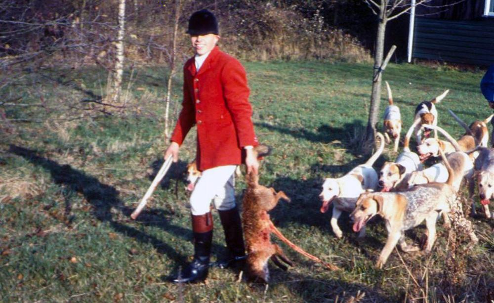

FOX HUNTING
Foxes are hunted by packs of fox hounds and people mounted on horses or on foot. This is mostly illegal under the Hunting Act 2004 but unfortunately still continues. Foxes are also killed as cubs as part of ‘cub hunting’, also known as ‘Autumn hunting’ which takes place before the main fox hunting season begins in November.
Foxes are also captured by hunts and kept in ‘artificial earths’ or disused buildings, so they can then be released in front of the hounds during the hunt. This proves that fox hunting is nothing to do with ‘fox control’ or ‘wildlife management’, as the hunts claim, and is purely about providing sport for the hunters.

WHAT ANIMAL ACTION ARE DOING TO PROTECT FOXES
- We investigate reports of illegal hunting, many of which come through our Animal Crimewatch service
- We film what we believe is illegal hunting and submit evidence to the police.
- We have directly prosecuted fox hunts for illegal hunting, when we believed the authorities would not have done so.
- An Animal Action film of Scottish hunts allegedly flushing foxes out of woods ‘to guns’ (which is allowed under the law) – but without a single gun in sight, has led to a review of hunting legislation in Scotland. This in turn played a major role in stopping an attempted repeal of the Hunting Act in England in 2015.
- We have many acres of land which we run as sanctuaries, where we own the ‘sporting rights’ meaning no-one can hunt or shoot on the land. We have many foxes resident in these safe areas
- We continue to educate the public, farmers and the government about foxes, as these animals are often misunderstood. Some key facts we want people to know are:
- Rural fox numbers have not increased since the Hunting Ban was introduced
- By feeding on rabbits, it has been estimated that rural foxes save British crop farmers around £7m per year
- Research in Scotland has shown that less than 2% of annual lamb losses can be directly attributed to foxes
- When a fox dies or is killed, another fox will take over its territory, sometimes as soon as within three to four days, meaning that lethal control of foxes is pointless. Non-lethal control methods are more humane, and often more effective.
HOW CAN I HELP FOXES?
- Contact your MP and ask them to urge their party to keep and strengthen the fox hunting ban
- Sign our petition to ban snares
- Join one of our supporter groups to help us raise awareness about fox hunting
- Download and share our amazing Foxycology infographic packed with fox facts
- Share this page on your social media